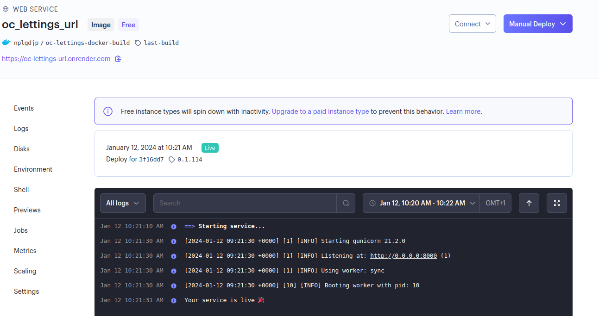

Déploiement et Gestion de l’application :
Le déploiement de l’application suit le workflow de la piplice Circle Ci. Il est prévu pour s’éxécuter sur la branche master.
workflows:
build-and-test:
jobs:
- coverage
- flake8
- build-publish:
requires:
- coverage
- flake8
filters:
branches:
only: master
Explication par étape de la pipline :
version: 2.1
orbs:
python: circleci/python@2
La pipeline CircleCI décrite ci-dessus est configurée selon la version 2.1 de CircleCI.
Elle utilise l’orbe python@2 pour faciliter l’exécution de tâches liées à Python.
Build and test :
jobs:
coverage:
# Install dependencies and run tests
docker:
- image: cimg/python:3.11.6
steps:
- checkout
- python/install-packages:
pkg-manager: poetry
- run:
name: Run tests
command: poetry run pytest -v --cov=. > cov-report.txt
- run:
name: Check coverage # circleci step halt stop build if failed
command: |
cov_result=$(grep -w 'TOTAL' cov-report.txt | awk '{print $NF}' | tr -d '%')
if [ "$cov_result" -gt 80 ]; then
echo 'Tests cover more than 80% of your project'
else
echo 'Fail: Tests cover less than 80% of your project'
circleci step halt
fi
La pipeline comprend deux jobs : “coverage” et “flake8”.
Le job “coverage” utilise une image Docker basée sur Python 3.11.6 pour installer les dépendances et exécuter les tests. Les étapes de ce job sont les suivantes :
checkout : récupère le code source du projet depuis le référentiel.
python/install-packages : installe les packages nécessaires à l’aide de Poetry,gestionnaire de dépendances pour Python.
run (Run tests) : exécute les tests en utilisant la commande “poetry run pytest -v –cov=. > cov-report.txt”. Cela lance les tests et génère un rapport de couverture.
run (Check coverage) : vérifie la couverture de test en utilisant le rapport de couverture généré précédemment Si la couverture est supérieure à 80%, un message “Tests cover more than 80% of your project” est affiché. Sinon, un message “Fail: Tests cover less than 80% of your project” est affiché et le build est arrêté avec la commande “circleci step halt”.
flake8:
# Install dependencies and run tests
docker:
- image: cimg/python:3.11.6
steps:
- checkout
- python/install-packages:
pkg-manager: poetry
- run:
name: flake8
command: poetry run flake8
Le job “flake8” est similaire au job “coverage”.
Il utilise également l’image Docker Python 3.11.6, installe les dépendances avec Poetry, puis exécute la commande “poetry run flake8” pour vérifier les erreurs de conformité aux règles de codage.
Build and publish :
Si et uniquement si la partie précédente a été validée la pipeline suit les étapes suivantes :
build-publish:
docker:
- image: cimg/base:2023.12
steps:
- checkout
- setup_remote_docker
- run:
name: login build and push
command: |
TAG=0.1.$CIRCLE_BUILD_NUM
echo "export TAG=$TAG" >> $BASH_ENV
docker build -t $DOCKER_USER/oc-lettings-docker-build:$TAG .
echo $DOCKER_TOKEN | docker login -u $DOCKER_USER --password-stdin
docker push $DOCKER_USER/oc-lettings-docker-build:$TAG
- run:
name: Trigger Render deploy
command: |
source $BASH_ENV
curl "$DEPLOY_HOOK&imgURL=docker.io%2F$DOCKER_USER%2Foc-lettings-docker-build%3A$TAG"
build-publish utilise l’image Docker “cimg/base:2023.12” pour créer et publier une image Docker pour le projet “oc-lettings-docker-build”
checkout : récupère le code source du projet depuis le référentiel.
setup_remote_docker : configure l’accès distant au serveur Docker pour permettre la création et la publication de l’image.
run (login build and push) : cette étape effectue les actions suivantes :
Définit la variable TAG en utilisant le numéro unique de build de CircleCI.
Exporte cette variable dans le BASH_ENV afin qu’elle puisse être ré-utilisée
Construit l’image Docker en utilisant la commande “docker build -t $DOCKER_USER/oc-lettings-docker-build:$TAG .”.
Effectue la connexion au registre Docker en utilisant le nom d’utilisateur $DOCKER_USER et le jeton $DOCKER_TOKEN pour l’authentification.
Pousse l’image Docker vers le registre en utilisant la commande “docker push $DOCKER_USER/oc-lettings-docker-build:$TAG”.
run (Trigger Render deploy) :
cette étape déclenche un déploiement en appelant une URL de déclenchement ($DEPLOY_HOOK) avec l’URL de l’image Docker précédemment publiée.

L’application est désormais déployée et accessible sur ==> https://oc-lettings-url.onrender.com

Monitoring de l’application avec Sentry :
logging.basicConfig(level=logging.INFO)
sentry_sdk.init(
dsn=os.getenv('SENTRY_DNS'),
enable_tracing=True,
integrations=[
LoggingIntegration(
level=logging.INFO,
event_level=logging.INFO
),
DjangoIntegration(
transaction_style='url',
middleware_spans=True,
signals_spans=True,
cache_spans=True,
),
],
profiles_sample_rate=1.0,
)
Le code ci-dessus est implémenté dans le settings.py d’oc_lettings_site, il configure un système de journalisation (logging) avec Sentry
logging.basicConfig(level=logging.INFO) : définit le niveau de journalisation à INFO.
- sentry_sdk.init()C’est l’initialisation de l’intégration Sentry de l’application.
dsn : Il s’agit de l’URL Sentry où les erreurs seront envoyées.
enable_tracing : permet la capture des traces de performance de l’application.
integrations : liste d’intégrations configurées pour Sentry.
LoggingIntegration : Permet de capturer les enregistrements de journalisation (logging) au niveau INFO.
DjangoIntegration : Cette intégration configure les fonctionnalités spécifiques de Django telles que la capture des transactions via les URL, la capture des traces des middlewares, des signaux et des caches.
profiles_sample_rate=1.0 : Cela définit le taux d’échantillonnage de profilage de Sentry à 100%. Cela signifie que toutes les erreurs et traces seront envoyées à Sentry.
En résumé, le système de journalisation au niveau INFO et active l’intégration de Sentry dans l’application Django oc_lettings_site.
L’intégration de Sentry permet de capturer et de suivre les erreurs et les performances de l’application, fournissant ainsi des informations précieuses pour le débogage et l’optimisation de l’application.
Cas d’usage :
from django.contrib import admin
from django.urls import path, include
import logging
from . import views
logger = logging.getLogger(__name__)
def trigger_error(request):
logger.info('info')
logger.error('error')
division_by_zero = 1 / 0
return division_by_zero
urlpatterns = [
path('', views.index, name='index'),
path('lettings/', include('lettings.urls')),
path('profiles/', include('profiles.urls')),
path('admin/', admin.site.urls),
path('sentry-debug/', trigger_error, name='sentry'),
]
Tentative d’accès à : https://oc-lettings-url.onrender.com/sentry-debug/

Remontée d’erreur dans Sentry :